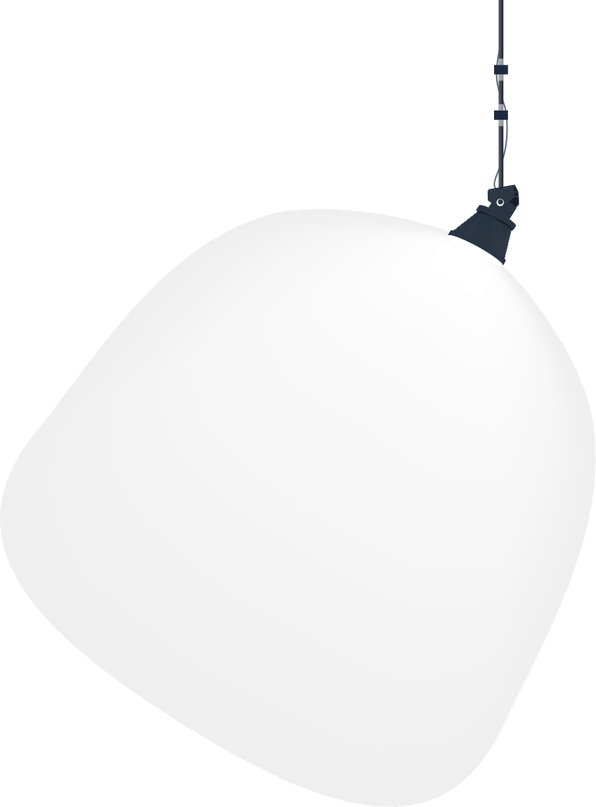
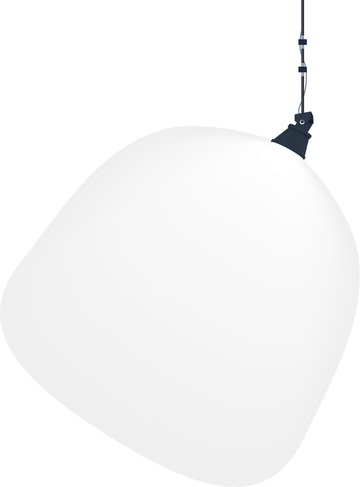

Accédez à l'espace virtuel des projets

Formé de l’affixe d’origine pan-, « tout », et démo-, « peuple », Pandèmes est un mot originaire de la Grèce antique qui réfère aux rassemblements où l’on servait des repas publics. Dans le contexte surréel de distanciation physique vécu ces derniers mois entourant la COVID-19, la Technique d’intégration multimédia du Collège Montmorency a voulu se réapproprier ce mot chargé en signification pour lui donner un sens fédérateur, réflexif et inventif.

Nous, les finissantes et finissants en Techniques d’intégration multimédia, vous invitons à vous rassembler, vous réapproprier cet espace laissée trop longtemps à l'abandon et à y parcourir nos projets de synthèse de programme. Nous avons conceptualisé et réalisé des installations interactives, des parcours et des performances multimédia dans un espace physique. Ces projets seront présentés dans un événement vidéo diffusé en direct du collège dès 19h le 25 mars prochain. Ces projets interactifs sont également accessibles pour vous, public à distance, via cet espace virtuel du 22 au 25 mars 2021.